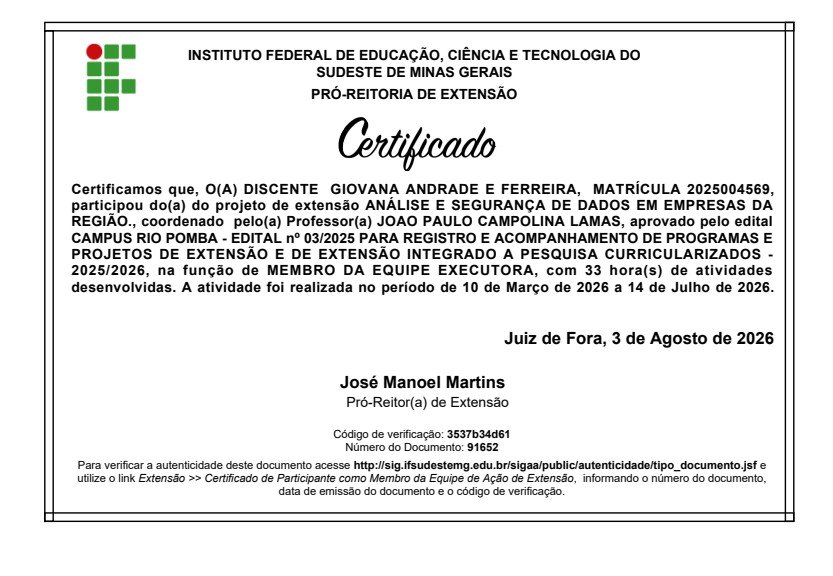
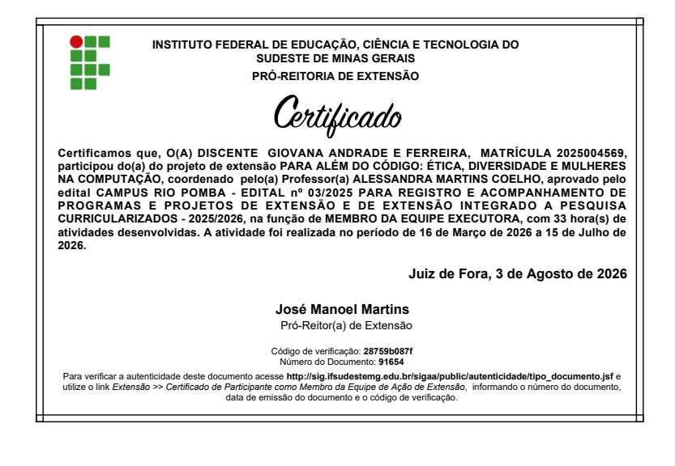
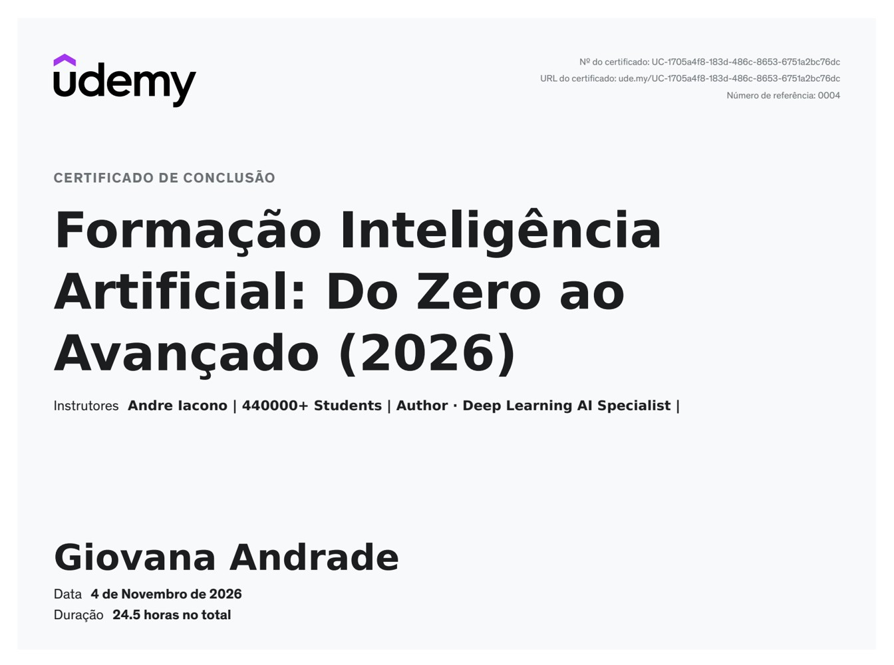
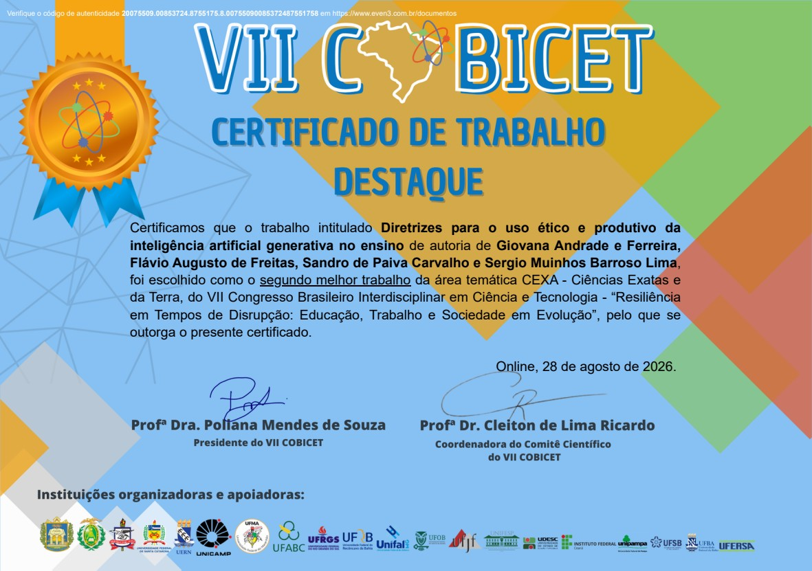
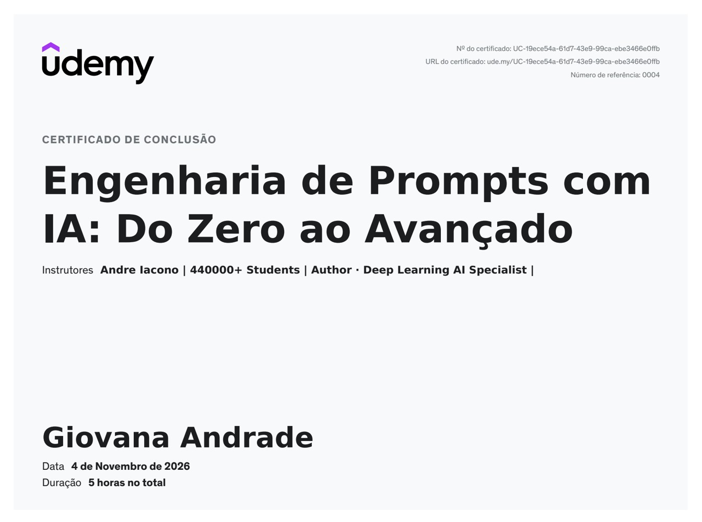

Extensão
Análise e segurança de dados em empresas da região
IF Sudeste MG
Participação como membro da equipe executora do projeto de extensão.
Cursos, projetos de extensão e reconhecimentos que fazem parte da minha formação.

IF Sudeste MG
Participação como membro da equipe executora do projeto de extensão.

IF Sudeste MG
Participação como membro da equipe executora do projeto de extensão.

Udemy
Formação em inteligência artificial ministrada por Andre Iacono.

VII Congresso Brasileiro Interdisciplinar em Ciência e Tecnologia
Segundo melhor trabalho da área temática CEXA — Ciências Exatas e da Terra, desenvolvido em coautoria.

Udemy
Curso de engenharia de prompts ministrado por Andre Iacono.